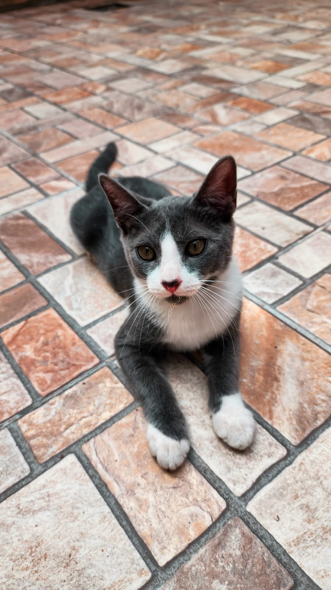
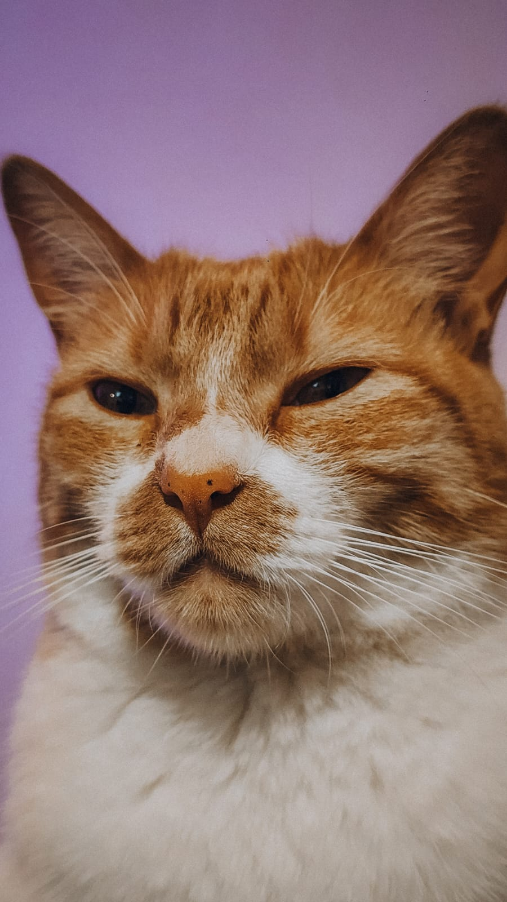
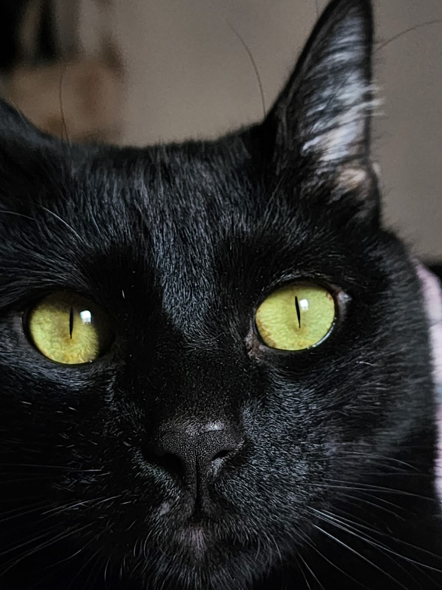

¿Por qué amo a los animales?
Los animales son seres muy importantes en nuestra vida. Nos brindan compañía, amor y alegría todos los días. Tener mascotas puede hacernos sentir mejor y acompañados.
Mis mascotas
Tengo 3 perras que se llaman Campy, Lulu y Lola. Son muy juguetonas y les gusta estar juntas. Donde por ahora viven con mi familia en Belen-Catamarca. También 3 gatos, una gata naranja con blanco que se llama Siri, ella es muy tranquila y se porta bien, Maravilla se llama otro gatito que es gris con blanco, es muy activo y muy comelón. el otro gatito se llamaba Wikus, era un gatito negro y era muy jugetón, mimoso y comelón, ahora él es un angel. Los gatitos viven conmigo en la Ciudad de La Rioja.


